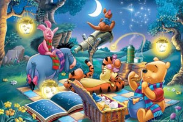
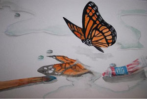

A brush, a pencil, Countless Strokes
Here are a few pieces that I kept over the years. Enjoy!
Then & Now
Back when I was younger, I would copy cartoon pictures out of picture books, such as Winnie the Pooh and Mickey Mouse. Every single time my siblings and I went to the library, we would pick out a lot of books to read and draw from. I started from simple mediums, such as pencil, crayons, color pencils, and markers. Eventually, I went to art lessons in Chinese school and learned how to properly capture shapes of objects, among other techniques. From that, I started to learn how to more precisely capture details for complex subjects. I took art lessons for many years and participated in various drawing competitions. Instead of listing my accomplishments, I choose instead to share the few pieces that I still have copies of.
Most of these works are from later on in my drawing career, after I learned how to draw with various mediums. The pieces pictured below are drawn anywhere between 2006 and 2014, with most of them from my high school years. Currently, I have works in gouache, acryllic, sketch, oil pastel, watercolor, watercolor pencil, oil paint, charcoal, Chinese art, and pen. Of course, not all are pictured here, since I unfortunately lost a lot of my work, especially from earlier times. Although I don't paint as much anymore, I still make simple sketches and designs here and there. I really hope you do appreciate the display of the work I've put into my hobby of 15 years.